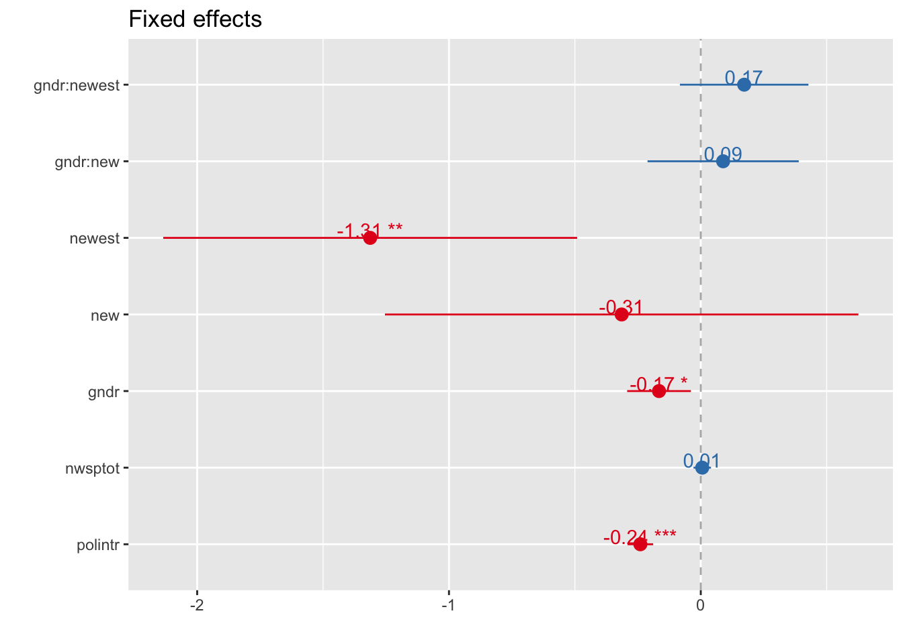

4.1 Cross-Level Interaction Model
Model Data
Stata
use "_data/ess50prep.dta", clear
xtmixed stfdem polintr nwsptot gndr##newest gndr##new || cntry: gndr, cov(unstructured)
estat icc
. use "_data/ess50prep.dta", clear
.
. xtmixed stfdem polintr nwsptot gndr##newest gndr##new || cntry: gndr, cov(uns
> tructured)
Performing EM optimization:
Performing gradient-based optimization:
Iteration 0: log likelihood = -24309.031
Iteration 1: log likelihood = -24309.028
Iteration 2: log likelihood = -24309.028
Computing standard errors:
Mixed-effects ML regression Number of obs = 10,963
Group variable: cntry Number of groups = 22
Obs per group:
min = 46
avg = 498.3
max = 1,544
Wald chi2(7) = 114.61
Log likelihood = -24309.028 Prob > chi2 = 0.0000
------------------------------------------------------------------------------
stfdem | Coef. Std. Err. z P>|z| [95% Conf. Interval]
-------------+----------------------------------------------------------------
polintr | -.2399529 .025955 -9.24 0.000 -.2908237 -.1890821
nwsptot | .0058149 .0177282 0.33 0.743 -.0289317 .0405615
|
gndr |
female | -.1657879 .0645948 -2.57 0.010 -.2923914 -.0391843
1.newest | -1.140559 .368079 -3.10 0.002 -1.861981 -.4191378
|
gndr#newest |
female#1 | .1723873 .1302671 1.32 0.186 -.0829316 .4277062
|
1.new | -.2253065 .4165704 -0.54 0.589 -1.041769 .5911564
|
gndr#new |
female#1 | .0888319 .1532403 0.58 0.562 -.2115135 .3891773
|
_cons | 6.366919 .1856832 34.29 0.000 6.002986 6.730851
------------------------------------------------------------------------------
------------------------------------------------------------------------------
Random-effects Parameters | Estimate Std. Err. [95% Conf. Interval]
-----------------------------+------------------------------------------------
cntry: Unstructured |
sd(gndr) | .1258337 .073777 .0398779 .3970644
sd(_cons) | .6765851 .1251705 .4708117 .972294
corr(gndr,_cons) | -.3937098 .3608483 -.8491707 .3976095
-----------------------------+------------------------------------------------
sd(Residual) | 2.213484 .0149805 2.184316 2.243041
------------------------------------------------------------------------------
LR test vs. linear model: chi2(3) = 690.66 Prob > chi2 = 0.0000
Note: LR test is conservative and provided only for reference.
. estat icc
Conditional intraclass correlation
------------------------------------------------------------------------------
Level | ICC Std. Err. [95% Conf. Interval]
-----------------------------+------------------------------------------------
cntry | .0854478 .0289368 .0432608 .1618164
------------------------------------------------------------------------------
Note: ICC is conditional on zero values of random-effects covariates.R
multi4 <- lmer(stfdem ~ polintr + nwsptot + (gndr * new) + (gndr * newest) + (1 + gndr |cntry), data = ess, REML = FALSE)tidy(multi4)glance(multi4)icc(multi4)##
## Linear mixed model
## Family: gaussian (identity)
## Formula: stfdem ~ polintr + nwsptot + (gndr * new) + (gndr * newest) + (1 + gndr | cntry)
##
## ICC (cntry): 0.0854464.2 Fixed Effects Plots
Stata
not (yet) available
R
Fixed effects
p-values approximated by Wald-Statistics with p.kr = FALSE -> reduces computing time signficantly
sjp.lmer(multi4, type = "fe", p.kr = FALSE)## Computing p-values via Wald-statistics approximation (treating t as Wald z).
Standardized Fixed effects
sjp.lmer(multi4, type = "fe.std", p.kr = FALSE)## Computing p-values via Wald-statistics approximation (treating t as Wald z).
Slopes of fixed effects
sjp.lmer(multi4, type = "fe.slope", vars = c("newest", "polintr"))## `sjp.lmer()` will become deprecated in the future. Please use `plot_model()` instead.
## Don't know how to automatically pick scale for object of type labelled. Defaulting to continuous.